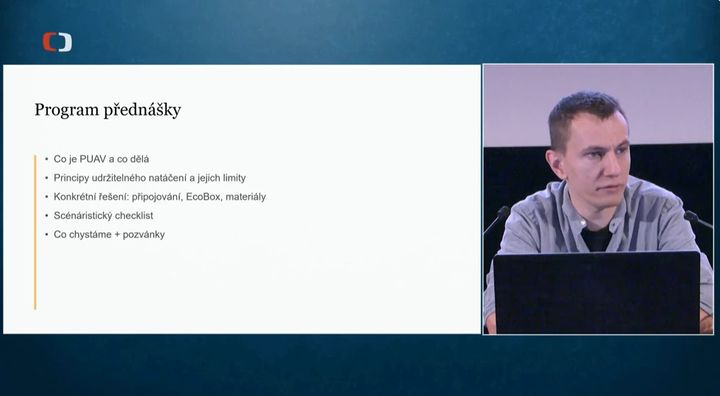
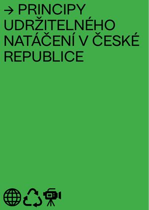
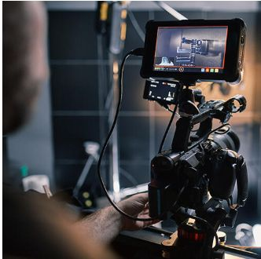
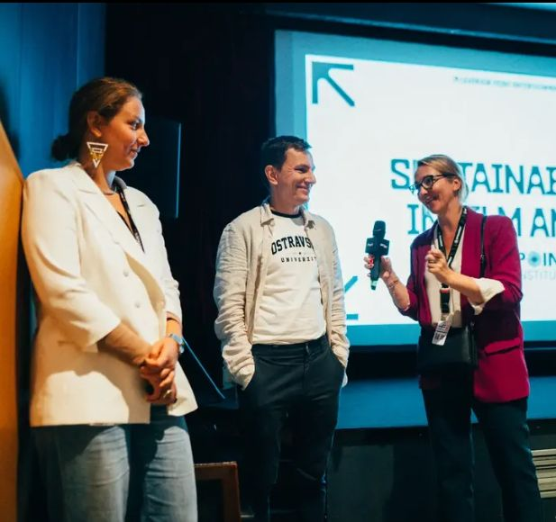
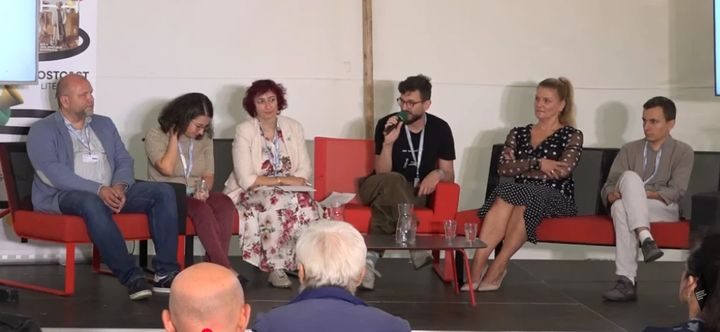

Zástupci členských organizací Platformy udržitelné audiovize na prvním setkání, 25. 1. 2024
Jsme otevřená oborová platforma, která propojuje producenty, režiséry, vysílatele, profesní asociace, filmové školy a odborníky na udržitelnost. Sdílíme ověřené know-how a vytváříme praktické nástroje, databáze a společné standardy, které usnadňují udržitelná rozhodnutí od vývoje námětu přes natáčení až po distribuci. Naším cílem je, aby se udržitelnost stala srozumitelnou a přirozenou součástí profesionální audiovizuální praxe.
Mgr. BcA. Miroslav Vlček, Ph.D. je manažerem Platformy udržitelné audiovize od ledna 2025, kdy byla tato funkce zřízena. Koordinuje činnost Platformy a jejích pracovních skupin, které hledají cesty, jak snižovat environmentální dopad filmové a televizní výroby v českém prostředí. Má na starosti Principy udržitelného natáčení, sjednocení reportingu mezi členy a vývoj praktických nástrojů pro štáby a scenáristy. Za PUAV přednáší, moderuje odborné diskuse a jedná s institucemi. Je také zapojen do mezinárodní sítě ASPA (Audiovisual Sustainability Professionals Association).
Vystudoval obor Rozhlasová a televizní dramaturgie a scenáristika na Divadelní fakultě Janáčkovy akademie múzických umění v Brně a Mediální studia a žurnalistika na Masarykově univerzitě. Tamtéž na Ústavu filmu a audiovizuální kultury získal doktorát v programu Obecná teorie a dějiny umění a kultury s disertací z oblasti produkčních studií. Působí jako odborný asistent na katedře sociologie Filozofické fakulty Ostravské univerzity, kde zároveň garantuje studijní program Žurnalistika. Ve výzkumu se zabývá mediálními průmysly z hlediska udržitelnosti v širším smyslu – nejen environmentální, ale i sociální – a to v souvislosti s klimatickou krizí, nástupem umělé inteligence a prekarizací práce.
Memorandum · 27. září 2024Podpis Memoranda na festivalu Serial Killer v Brně, 27. září 2024. Foto: Česká televize
Memorandum pro udržitelný audiovizuální průmysl podepsali klíčoví hráči české audiovize
Na mezinárodním festivalu Serial Killer v Brně podepsalo šest klíčových hráčů české audiovize Memorandum o založení platformy pro udržitelnou audiovizi: APA, ARAS, Česká televize, FAMU, FTV Prima a TV Nova.
Podstatné na tom není samotné podepsání dokumentu. Podstatné je, že si ke stolu sedly organizace, které si na trhu běžně konkurují, a shodly se, že udržitelnost nemá být předmětem soutěže. Standardy, data a nástroje mají smysl jen tehdy, když platí pro celý obor.
Signatáři se zavázali sjednotit postupy pro snižování dopadů výroby, sdílet zkušenosti, podporovat vzdělávání a vytvořit databázi odpovědných dodavatelů. Platforma zahájila činnost v lednu 2025 a od té doby se rozrostla na 23 členů.
Devátý ročník mezinárodního festivalu seriálů v Brně nabídne premiéry evropské tvorby i odborné panely TV Days. Právě na tomto festivalu bylo v roce 2024 podepsáno Memorandum o vzniku PUAV. serialkiller.tv ↗
Diskuse
Udržitelné natáčení od scénáře po distribuci
Na 52. Letní filmové škole v Uherském Hradišti jsme uspořádali panel o tom, jak snižovat environmentální dopad audiovizuální výroby od psaní scénáře až po distribuci. Diskutovali Hana de Goeij (TV Nova), Kateřina Kovářová (ČT), Vít Schmarc (FAMU), Jan Hubáček (Gnomon Production) a scenárista Josef Kokta, moderoval Miroslav Vlček. Záznam ↗
Vzdělávání
FAMU otevírá kurzy udržitelnosti v audiovizi
Bezplatné kurzy zaměřené na filmovou produkci, data a reporting i environmentální komunikaci. Účastníci získají mezinárodně uznávaný mikrocertifikát. Více ↗

Přednáška
Udržitelnější filmová výroba je možná
V České televizi jsme producentům představili Principy udržitelného natáčení včetně jejich praktických limitů a možných řešení. Záznam přednášky shrnuje současný stav udržitelného natáčení v ČR a je volně dostupný na YouTube kanálu PUAV. Záznam ↗

Principy
Jednotný reporting Principů zaveden napříč členy
Televizní i nezávislé produkce nyní vykazují plnění Principů podle jedné metodiky a společné struktury závěrečné zprávy.

Mezinárodní
Evropský workshop o hodnocení rizik v audiovizuální výrobě
Na 48. ročníku festivalu krátkých filmů v Clermont-Ferrand se PUAV zapojil do workshopu pro producenty o fyzické a psychosociální bezpečnosti při natáčení. Workshop pořádali evropští sociální partneři audiovize. Více ↗

Workshop
Udržitelnost v industry programu Finále Plzeň
V industry sekci festivalu Finále Plzeň jsme spolu se Zsófií Szemerédy z Leverage Point Entertainment vedli workshop o udržitelnosti ve vývoji a výrobě audiovizuálních projektů. Připravili jsme ho ve spolupráci s MIDPOINT Institute.

Diskuse
Udržitelnost jako cesta
V programu Nová realita na 51. Letní filmové škole v Uherském Hradišti jsme představili Platformu udržitelné audiovize v debatě o udržitelnosti, kterou moderovala Simona Babčáková. Záznam ↗
Přednáška
PUAV v Industry programu KVIFF
V rámci Industry Days 59. MFF Karlovy Vary jsme představili novou alianci a Principy udržitelného natáčení s praktickými doporučeními pro produkce. Záznam ↗